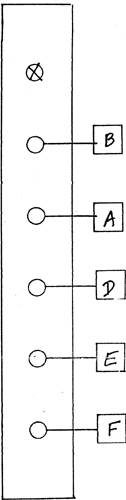
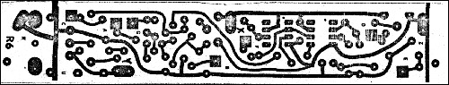

|
VCA (Voltage Controlled Amplifier) Also called GATE.
 PC board No. R6. (marked VCA by hand) Note: PC board R6 is composed of two independent 1" wide circuits. These are pre-wired at the factory to function either as two RING MODULATORS, one RING and a VCA - or two VCAs. It is important to keep the wiring separate. A common mistake is to wire a connection to the wrong half of the PC board, since the two halves are identical in appearance and share duplicate lettering... Mistakes can be avoided by keeping all wiring localized within the one inch space taken up by the module on the PANEL and the PC BOARD. Another point of possible confusion arises when doing the power supply wiring. On board power supply jumpers between halves of the board are already installed (for X and Y), resulting in oval pads that have a single hole and not two as normal. Power supply wiring should therefore be done first to one of the oval pads, and then continued from the second oval pad on the dual board... SELF TEST PROCEDURE As a VCA, a signal is plugged into the "AC" input, a CV into the "log" input, and the output is monitored. The knob control is equivalent to a CV, as it is turned CW. For full effect of the CV, the knob should be set to about 9 o'clock. Turning it further CCW results in some gain reduction, therefore allowing a modest amount of amplitude control. Try the above patch. After you are satisfied that it works, you may proceed to testing the "LIN" and the "DC" inputs. Leaving the previous patch, plug a BLUE audio output (say from the VCO, POS. or NEG. SLEWS, WAVESHAPERS, etc.) into the "LIN" input. Amplitude modulation should result. In emergencies, when you need an extra mixer and don't have one handy, the "DC" input may be used as an extra input to the VCA. Unplug the audio from the "LIN" input, and patch it into the DC input. You should hear the two signals at AC and DC inputs mixed at unity gain. To test the use of the VCA to control the gain of a CV, perform the following patch. Plug the VCA's output into a suitable monitoring input, say the VC frequency control of a VCO that is listened to. Plug a suitable repetitive envelope into the "DC" input. Plug a manually controlled or slow moving CV into the "lin" input. Set the knob fully CW. As the controlling CV moves from 0 to +5V, you should hear the gain of the controlled CV be varied from unity gain (full gain) down to virtually zero gain. If not, you have probably miswired pads E and D. 
|